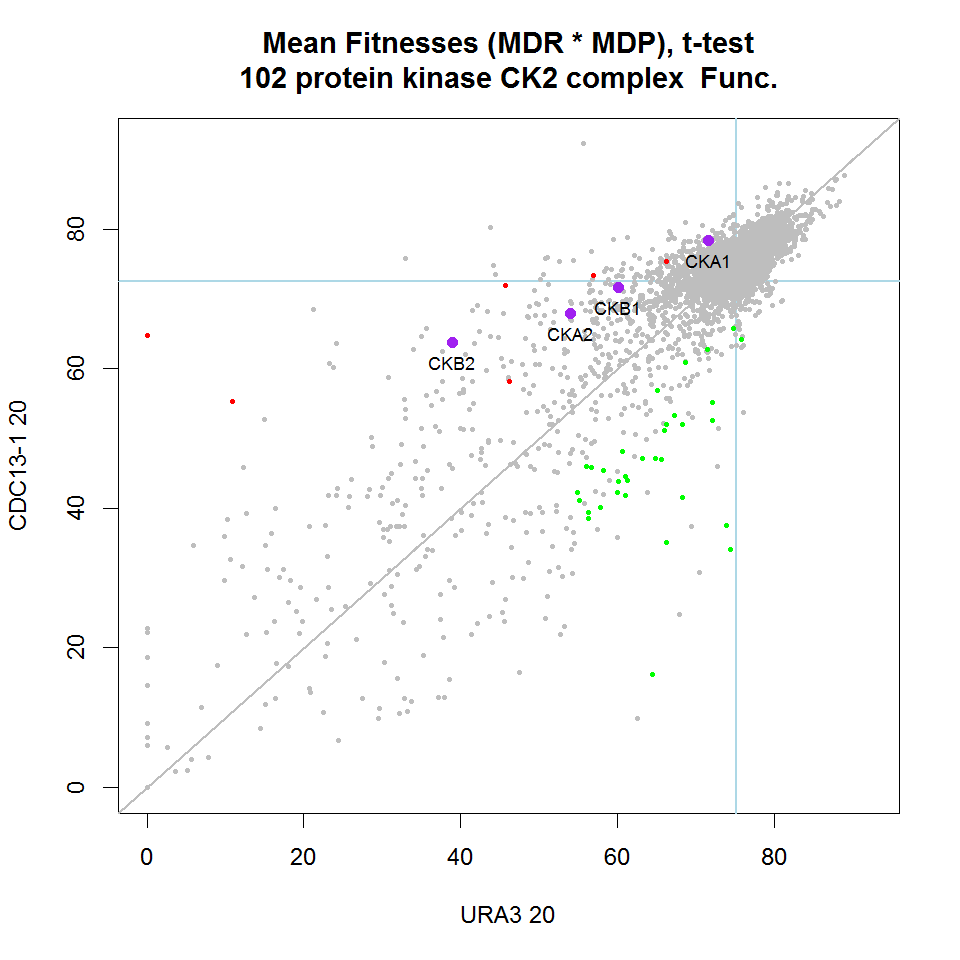
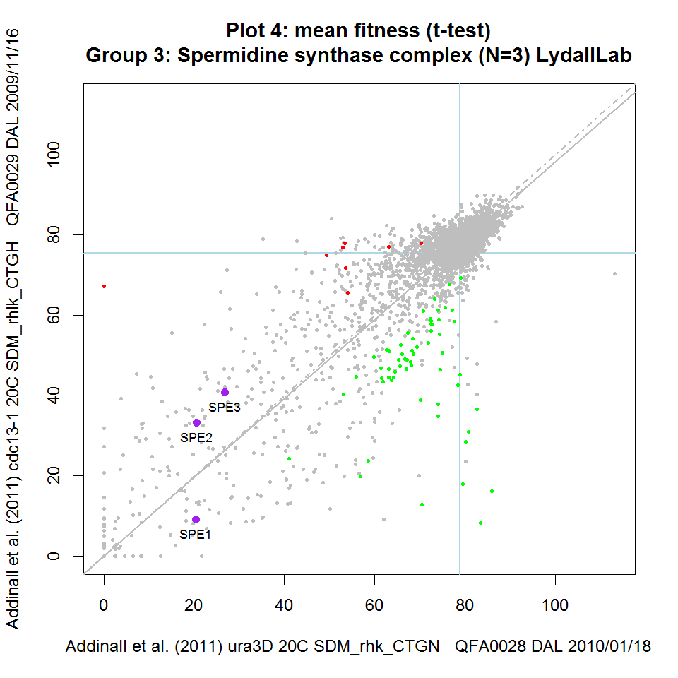
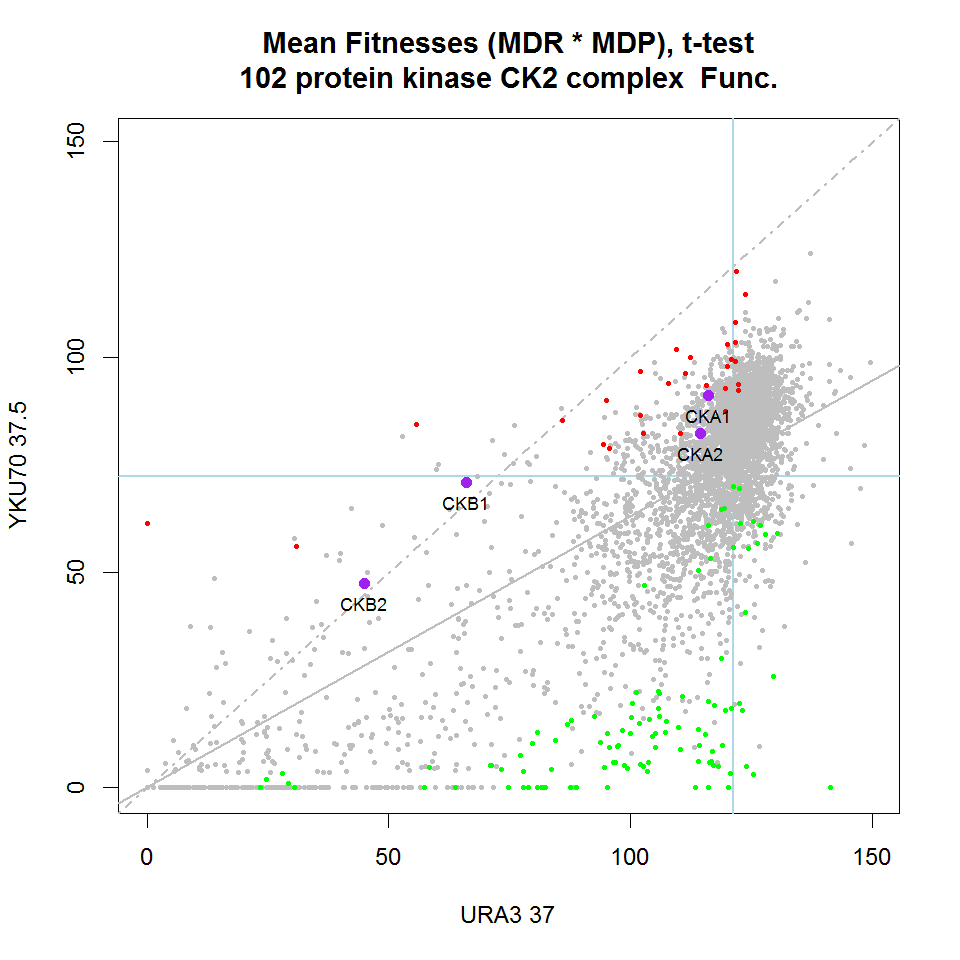

This page is for users interested in the interactive data visualisation tools which form a part of the QFA R package. A more general introduction to the QFA R package can be found here. Currently, interactive R plots are only available under OSX and Windows. A web-based visualisation tool is under development here.
Introduction
QFA experiments are often used to compare the fitnesses of independent microbial strains under two different environmental conditions (e.g. query and control conditions), or in two different genetic backgrounds, to search for evidence for drug interactions or genetic interactions for example. Such comparisons can become difficult to visualise by static scatterplot due to the sheer number of strains examined, simply because simultaneous labelling of ~4,000 genes on a single plot is not practical. For example, in Figure 2 from Addinall et al., 2011 the labels for many genes in interesting locations are obscured.
The qfaR visualisation tool provides a means to interact with such scatterplots, to make rapid, visual comparisons between different pairs of QFA experiments and to query plots in real time, aiding analysis and interpretation of the underlying data. qfaR visualisation can be applied to any paired sets of control and query fitnesses, including SGA screen data, or liquid growth fitnesses.
  Three qfaR Fitness Plots Scatterplots of data from Addinall et al., 2011 printed using the qfaR visualisation tool. The same four functionally related genes are highlighted in purple on each plot and names printed. Genes highlighted in green significantly enhance the background mutation phenotype indicated in the y-axis label. Similarly, genes highlighted in red suppress the phenotype. Blue horizontal and vertical lines intersect at the point corresponding to his3Δ (a wild-type surrogate). Solid grey line is predicted double-mutant fitness, given single deletion fitness and assuming a multiplicative model of genetic independence. Dashed grey line is the line of equal fitness. Click on panels to zoom.
Screen pairs are indicated with shorthand labels on the x and y axis. For example, the label 'CDC13-1 20' represents an experiment combining the yeast deletion collection with a background cdc13-1 mutation, grown at 20°C. Similarly, the label 'URA3 20' represents an experiment combining the yeast deletion collection with a neutral, background ura3Δ mutation, grown at 20°C. For each QFA pair, the plot title indicates the fitness definition used (e.g. MDR*MDP or MDR), the statistic used to summarise replicate fitness observations (e.g. mean or median) and the statistical test used to identify enhancers and suppressors (e.g. Student's t-test or the Wilcoxon test).
Installing or updating the visualisation tool
The visualisation tool is part of the qfa R package. To install the tool, please follow the installation instructions on the qfa R package webpage.
Documentation
Once the qfa package is installed, you can access detailed documentation for the visualisation tool by typing the following command into the R console (followed by pressing enter):
vignette("qfa")
This should open a webpage in your browser.